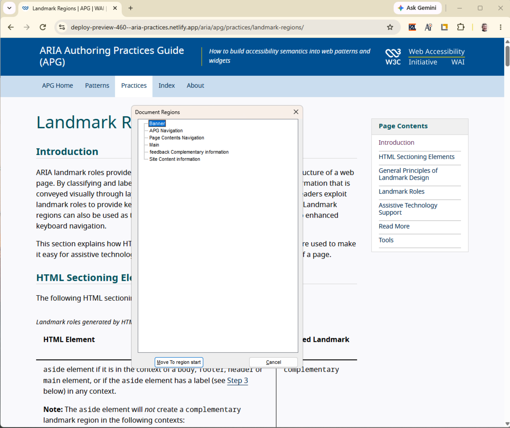
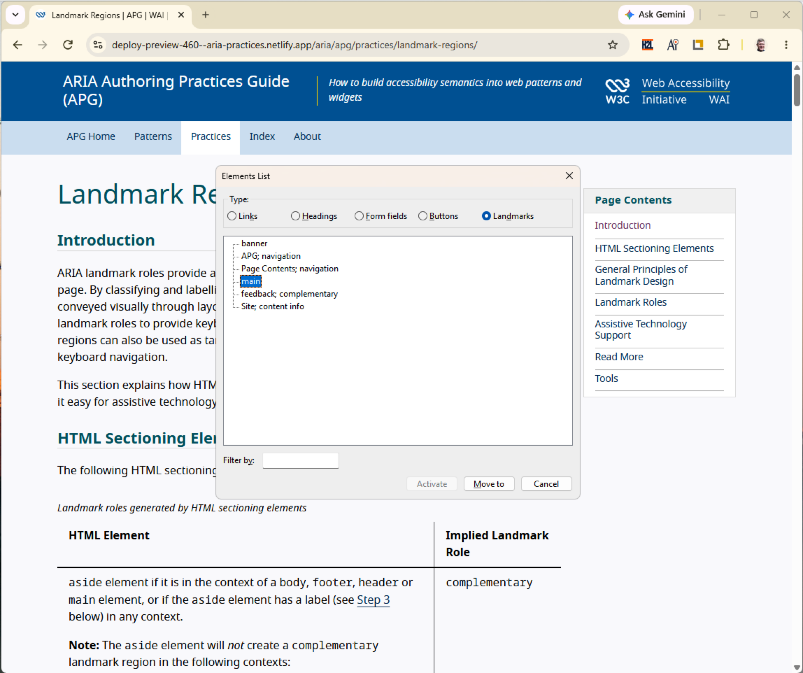
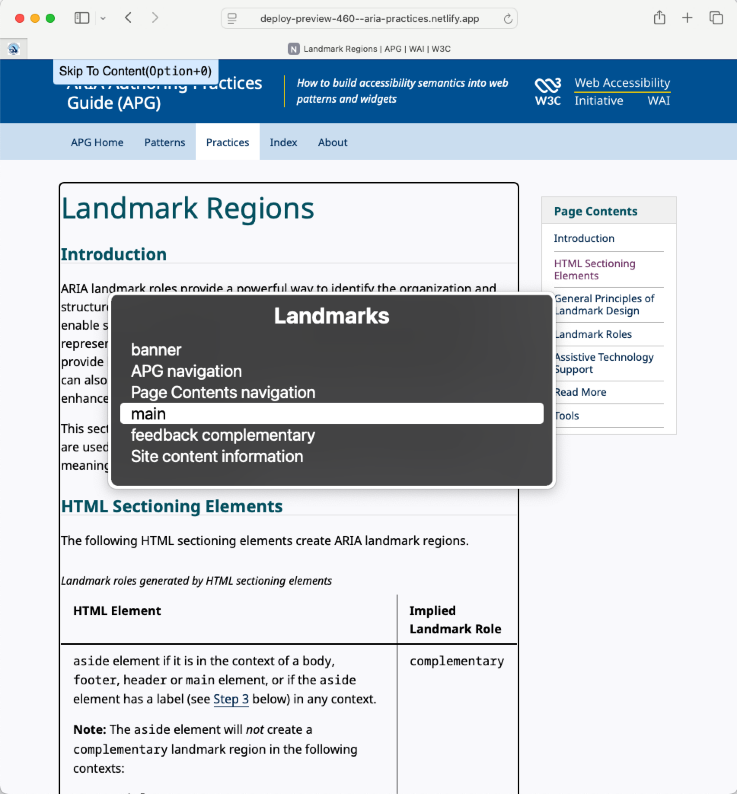
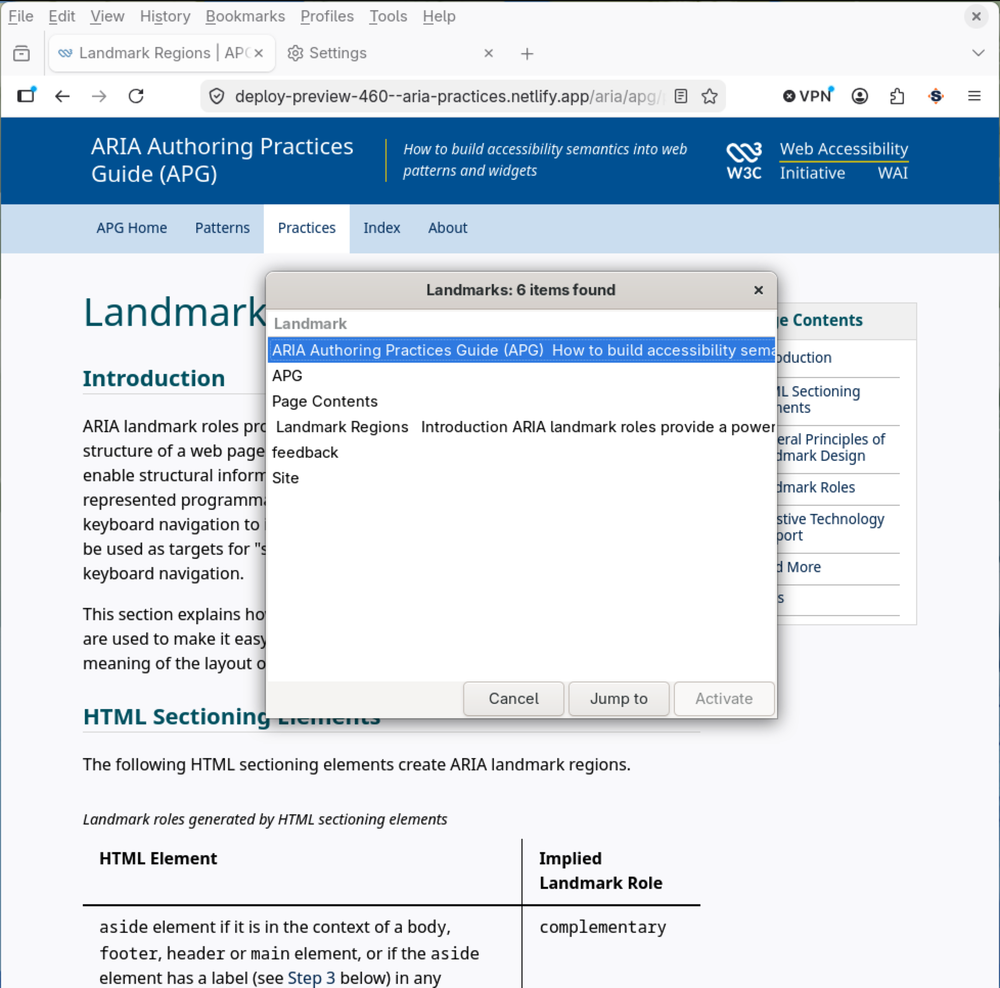
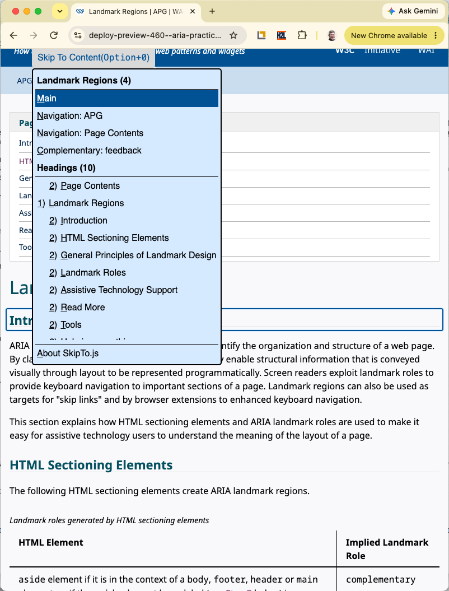

Landmark Regions
Introduction
ARIA landmark roles provide a powerful way to identify the organization and structure of a web page. By classifying and labelling sections of a page, they enable structural information that is conveyed visually through layout to be represented programmatically. Screen readers exploit landmark roles to provide keyboard navigation to important sections of a page. Landmark regions can also be used as targets for "skip links" and by browser extensions to enhanced keyboard navigation.
This section explains how HTML sectioning elements and ARIA landmark roles are used to make it easy for assistive technology users to understand the meaning of the layout of a page.
HTML Sectioning Elements
The following HTML sectioning elements create ARIA landmark regions.
| HTML Element | Implied Landmark Role |
|---|---|
|
Note: The
|
complementary |
footer if it is in the context of a body element |
contentinfo |
form if it has a label (see Step 3 below) |
form |
header if it is in the context of a body element |
banner |
main |
main |
nav |
navigation |
section if it has a label (see Step 3 below) |
region |
search |
search |
General Principles of Landmark Design
Including all perceivable content on a page in one of its landmark regions and giving each landmark region a semantically meaningful role is one of the most effective ways of ensuring assistive technology users will not overlook information that is relevant to their needs.
Step 1: Identify the logical structure
- Break the page into perceivable areas of content which designers typically indicate visually using alignment and spacing.
- Areas can be further defined into logical sub-areas as needed.
- An example of a sub-area is a portlet in a portal application.
Step 2: Assign landmark roles to each area
- Assign landmark roles based on the type of content in the area.
banner,main,complementaryandcontentinfolandmarks should be top level landmarks.- Landmark roles can be nested to identify parent/child relationships of the information being presented.
- Note that wrapping the content of a modal dialog in a landmark region is unnecessary. A landmark that wraps modal content cannot provide any benefit to users because it is not perceivable unless the modal is open. In addition, when a modal is open, a landmark containing its content is superfluous because the modal itself is a container that provides both a name and boundaries.
Step 3: Label landmarks
- If a specific landmark role requires a label or is used more than once on a page, provide each instance of that landmark with a unique and descriptive label. The label should be short and help people understand the content in the region.
-
There is one rare circumstance where providing the same label to multiple instances of a landmark can be beneficial: the content and purpose of each instance is identical.
For example, a large search results table has two sets of identical pagination controls -- one above and one below the table, so each set is in a navigation region labelled
Search Results
. In this case, adding extra information to the label that distinguishes the two instances may be more distracting than helpful. - If a landmark is only used once on the page it may not require a label. See Landmark Roles section below.
- If an landmark region begins with a heading element (e.g.
h1-h6) it can be used as the label for the region usingaria-labelledby. - If a
formlandmark region has afieldsetelement that encapsulates all the controls in the form, the correspondinglegendelement can be used as the label for the region usingaria-labelledby. - If a landmark requires a label and does not have a heading element, provide a label using the
aria-labelattribute. Note: While thetitleattribute can also be used to provide a label, it is not considered a best practice and is discouraged. - Do not use the landmark role as part of the label. For example, a navigation landmark with a label "Site Navigation" will be announced by a screen reader as "Site Navigation Navigation". The label should simply be "Site".
Landmark Roles
Complementary
A complementary landmark is a supporting section of the document, designed to be complementary to the main content at a similar level in the DOM hierarchy, but remains meaningful when separated from the main content.
complementarylandmarks should be top level landmarks (e.g. not contained within any other landmarks).- If the complementary content is not related to the main content, a more general role should be assigned (e.g.
region). - If a page includes more than one
complementarylandmark, each should have a unique label (see Step 3 above).
HTML Technique
- Use the HTML
asideelement to define acomplementarylandmark when its context is thebodyelement. -
The HTML
asideelement is not considered acomplementarylandmark when it is following contexts:articleasidenavsection
ARIA Technique
If the HTML aside element technique is not being used, use a role="complementary" attribute to define a complementary landmark.
Contentinfo
A contentinfo landmark is a way to identify common information at the bottom of each page within a website, typically called the "footer" of the page, including information such as copyrights and links to privacy and accessibility statements.
- Each page may have one
contentinfolandmark. - The
contentinfolandmark should be a top-level landmark. - When a page contains nested
documentand/orapplicationroles (e.g. typically through the use ofiframeandframeelements), eachdocumentorapplicationrole may have onecontentinfolandmark. - If a page includes more than one
contentinfolandmark, each should have a unique label (see Step 3 above).
HTML Techniques
- The HTML
footerelement defines acontentinfolandmark when its context is thebodyelement. -
The HTML
footerelement is not considered acontentinfolandmark when it is in the following contexts:articleasidemainnavsection
ARIA Technique
If the HTML footer element technique is not being used, a role="contentinfo" attribute should be used to define a contentinfo landmark.
Form
A form landmark identifies a region that contains a collection of items and objects that, as a whole, combine to create a form when no other named landmark is appropriate (e.g. main or search).
- Use the
searchlandmark instead of theformlandmark when the form is used for search functionality. - A
formlandmark should have a label to help users understand the purpose of the form. - A label for the
formlandmark should be visible to all users (e.g. anh1-h6element) orlegendelement. - If a page includes more than one
formlandmark, each should have a unique label (see Step 3 above). -
Whenever possible, controls contained in a
formlandmark in an HTML document should use native host semantics:buttoninputselecttextarea
HTML Techniques
The HTML form element defines a form landmark when it has a label (see Step 3 above).
NOTE: If the form uses a fieldset/legend to provide a grouping label for all the controls in the form, use the legend element as a landmark label by referencing it using aria-labelledby.
ARIA Technique
Use the role="form" with a label (see Step 3 above) to identify a region of the page with a set of form controls; do not use it to identify every form field.
Main
A main landmark identifies the primary content of the page.
- Each page should have one
mainlandmark. - The
mainlandmark should be a top-level landmark. - When a page contains nested
documentand/orapplicationroles (e.g. typically through the use ofiframeandframeelements), eachdocumentorapplicationrole may have onemainlandmark. - If a page includes more than one
mainlandmark, each should have a unique label (see Step 3 above).
HTML Technique
Use the HTML main element to define a main landmark.
ARIA Technique
If the HTML main element technique is not being used, use a role="main" attribute to define a main landmark.
Region
A region landmark is a perceivable section of the page containing content that is sufficiently important for users to be able to navigate to the section.
- A
regionlandmark must have a label. - If a page includes more than one
regionlandmark, each should have a unique label (see Step 3 above). - The
regionlandmark can be used to identify content that named landmarks do not appropriately describe.
HTML Technique
The HTML section element defines a region landmark when it has an label (see Step 3 above).
ARIA Technique
If the HTML section element technique is not being used, use a role="region" attribute to define a region landmark with a label (see Step 3 above).
Search
A search landmark contains a collection of items and objects that, as a whole, combine to create search functionality.
- Use the
searchlandmark instead of theformlandmark when the form is used for search functionality. - If a page includes more than one
searchlandmark, each should have a unique label (see Step 3 above).
HTML Technique
Use the HTML search element to define a search landmark.
ARIA Technique
If the HTML search element technique is not being used, use a role="search" attribute to define a search landmark.
Assistive Technology Support
The following sections demonstrate how various popular assistive technologies support landmark navigation
- JAWS Screen Reader for Windows
- NVDA Screen Reader for Windows
- VoiceOver Screen Reader for macOS
- ORCA Screen Reader for Linux/Gnome
- SkipTo.js browser extension
JAWS Screen Reader for Windows
The following commands are available in the JAWS screen reader (since version 15) for navigating landmarks:
| Command | Action |
|---|---|
| Q | Go to main landmark |
| R | Go to next landmark |
| Shift+R | Go to previous landmark |
| Insert+Control+R | List of landmarks |

NVDA Screen Reader for Windows
The following commands are available in NVDA screen reader (since version 2014.2) for navigating landmarks:
| Command | Action |
|---|---|
| D | Go to next landmark |
| Shift+D | Go to previous landmark |
| NVDA+F7 | List of landmarks |

VoiceOver Screen Reader for macOS
The following commands are available in VoiceOver screen reader for navigating landmarks:
| Command | Action |
|---|---|
| W (Quick Nav) | Go to next landmark |
| Shift+W (Quick Nav) | Go to previous landmark |
| Control+Option+U, then left or right arrow key to landmark list | List of landmarks |

ORCA Screen Reader for Linux/GNOME
The following commands are available in ORCA Screen reader for navigating landmarks:
| Command | Action |
|---|---|
| M | Next landmark |
| Shift+M | Previous landmark |
| Alt+Shift+M | List of landmarks |

SkipTo.js Browser Extension
The SkipTo.js browser extensions implement the User Agent Accessibility Guidelines 1.0 requirement 9.9 Allow Structured Navigation
. It does this by providing keyboard navigation to major landmarks and headings on any web page. The keyboard shortcut to open the "Skip To Content" menu is alt + 0 on Windows/Linux and option + 0 on Mac keyboards.
The following table identifies additional single key shortcuts to navigate headings and landmarks. The single key commands are similar to the navigation commands found in screen readers.
| Command | Action |
|---|---|
| r | Next landmark |
| shift+r | Previous landmark |
| h | Next heading |
| shift+h | Previous heading |
| m | Next Main landmark |
| n | Next Navigation landmark |
| c | Next Complementary landmark |
| 1 | Next H1 heading |
| 2 | Next H2 heading |
| 3 | Next H3 heading |
| 4 | Next H4 heading |
| 5 | Next H5 heading |
| 6 | Next H6 heading |
Links to extensions:

Read More
- ARIA11: Using ARIA landmarks to identify regions of a page (WCAG 2.0 Technique)
- ARIA20: Using the region role to identify a region of the page (WCAG 2.0 Technique)
- WAI-finding with ARIA Landmark Roles (A List Apart)
- Using WAI-ARIA Landmarks – updated (Vispero)
- Basic screen reader commands for accessibility testing (Vispero)
- Screen Reader User Survey #10 Results: Landmarks/Regions (WebAIM)
- ARIA Landmark Regions Example with highlight/hide regions button
Tools
- Headings, Landmarks and Links Browser Extensions (H2L)
- SkipTo.js: Browser Extensions
- SkipTo.js: Page Script (used on this page)
- Landmarks Browser Extension
- Accessibility Bookmarklets: Landmark Bookmarklet
- The Visual ARIA Bookmarklet
- Accessibility Inspector for WCAG Evaluation (Landmark Rule Category)